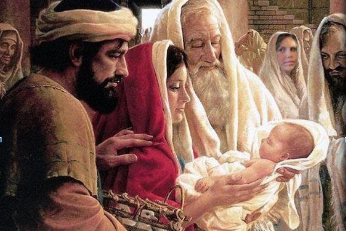

Terço missionário
Mistérios Gozozos
Segundas e sábados
Introdução:
Vamos rezar juntos o terço missionário, saudando e louvando Nossa Senhora, a Mãe de Deus e nossa Mãe.
Rezando o terço missionário, aprofundamos nosso compromisso como discípulos e discípulas missionárias de Jesus Cristo. Como Maria, pela força do Espírito Santo, nós nos dispomos a realizar a missão de Jesus Cristo, o enviado do Pai, e nos unimos a todos os missionários e missionárias espalhados pelo mundo.
No terço missionário, nós nos encontramos com todos os povos, raças e culturas da terra, abrindo-nos aos imensos horizontes da missão, rezando pelas necessidades de toda a humanidade.
Oferecimento
Divino Espírito Santo, iluminai nossas inteligências e nossos corações para que, ao meditarmos os mistérios da nossa redenção, possamos imitar o exemplo de Jesus e de Maria, anunciando a todas as pessoas o amor misericordioso de Deus para conosco.
Em comunhão com toda a humanidade, oferecemos nossas orações: pela paz no mundo, pelas pessoas vítimas das injustiças, pela santificação das famílias, por aqueles que anunciam o Evangelho nos cinco continentes, pelas intenções do Papa, por nossas comunidades e por todo o povo de Deus, para que seja sempre mais solidário com os povos do mundo inteiro.
Nossa Senhora, Estrela da Evangelização, fazei que todas as pessoas de boa vontade se deem as mãos e se tornem construtoras de uma sociedade sem fronteiras, justa e solidária.
Rezemos os mistérios gozosos, alegrando-nos com as maravilhas que Deus realiza para nossa
No 1º mistério, contemplamos o anúncio do anjo a Maria (Lc 1,26-38).

Oração pela África
Rezemos pela África. A cor verde recorda as imensas florestas e toda a natureza do continente africano, marcado por conflitos, violência e toda sorte de contradições e sofrimentos
A Igreja africana é jovem, dinâmica, cheia de vitalidade e de grande esperança para o futuro, graças à presença e ação evangelizadora de tantos missionários e missionárias, ao entusiasmo com que suas populações acolhem a mensagem do Evangelho.
Pai-Nosso...
10 Ave-Marias
Glória ao Pai..
Ó meu Jesus, perdoai-nos, livrai-nos do fogo do inferno, levai as almas todas para o céu e socorrei principalmente as que mais precisarem de vós.
No 2º mistério gozoso, contemplamos a visita de Maria a Isabel, sua prima (Lc 1,39-45).
Oração pelas Américas
Rezemos pelas Américas. A cor vermelha representa os povos indígenas, primeiros habitantes de nosso continente. Também simboliza a terra vermelha de sangue ameríndio, derramado na época das conquistas, e dos mártires de ontem e de hoje.
Em nosso continente americano, temos o maior número de cristãos de todo o mundo. Mas temos também enormes desigualdades sociais, violência, corrupção e injustiça.
Hoje se faz ainda mais urgente a necessidade da ação missionária e profética da Igreja, no anúncio da justiça e da solidariedade.
Pai-Nosso...
10 Ave-Marias
Glória ao Pai..
Ó meu Jesus, perdoai-nos, livrai-nos do fogo do inferno, levai as almas todas para o céu e socorrei principalmente as que mais precisarem de vós.
No 3º mistério, contemplamos o nascimento de Jesus em Belém (Lc 2,6-7).
Oração pela Europa
Rezemos pela Europa, aqui representada pela cor branca dos povos europeus. No passado, a Europa enviou missionários e missionárias para todos os continentes, contribuindo para a evangelização de inúmeros povos.
Apesar disso, com a secularização, as igrejas europeias envelheceram e estão se esvaziando. Necessitam urgentemente de uma nova evangelização. Vamos rezar também pelo Papa, mensageiro da paz e grande missionário no mundo.
Pai-Nosso...
10 Ave-Marias
Glória ao Pai..
Ó meu Jesus, perdoai-nos, livrai-nos do fogo do inferno, levai as almas todas para o céu e socorrei principalmente as que mais precisarem de vós.
No 4º mistério, contemplamos a apresentação do Menino Jesus no Templo (Lc 2,22-23)..
Oração pela Oceania
Rezemos pela Oceania e suas mais de 20 mil ilhas espalhadas pelo oceano Pacífico. Por isso usamos a cor azul, para lembrar os inúmeros povos que vivem rodeados pelas águas azuis de seus mares.
Nesse continente, convivem povos aborígenes, com suas tradições milenares, ao lado de sociedades altamente industrializadas, com todas as contradições e contrastes do mundo moderno.
Que o Espírito de Deus desperte os povos de tantas ilhas para descobrirem a beleza da proposta de Jesus e encarná-la em suas culturas.
Pai-Nosso...
10 Ave-Marias
Glória ao Pai..
Ó meu Jesus, perdoai-nos, livrai-nos do fogo do inferno, levai as almas todas para o céu e socorrei principalmente as que mais precisarem de vós
No 5º mistério, contemplamos a perda e o encontro de Jesus no Templo (Lc 2,43-46).

Oração pela Ásia
Rezemos pela Ásia, simbolizada na cor amarela, própria dos povos asiáticos.
Na Ásia, encontra-se mais da metade da população do planeta e a menor porcentagem de cristãos. Suas populações vivem os extremos da riqueza e da pobreza. Mesmo com os avanços da tecnologia, continuam existindo áreas de pobreza absoluta.
Que possamos aprender da sabedoria oriental dos povos asiáticos, que, por suas práticas religiosas, vivem em profunda harmonia com a natureza e com Deus.
Que o encontro com a fé cristã seja motivo de alegria e de crescimento mútuo e nunca razão para conflitos.
Pai-Nosso...
10 Ave-Marias
Glória ao Pai..
Ó meu Jesus, perdoai-nos, livrai-nos do fogo do inferno, levai as almas todas para o céu e socorrei principalmente as que mais precisarem de vós.
Conclusão
Infinitas graças vos damos, Soberana Rainha, pelos benefícios que, todos os dias, recebemos de vossas mãos liberais. Dignai-vos, agora e para sempre, tomar-nos debaixo do vosso poderoso amparo e, para mais vos obrigar, vos saudamos com uma Salve Rainha:
Salve, Rainha, Mãe de Misericórdia, vida, doçura e esperança nossa, salve! A vós bradamos, os degredados filhos de Eva; a vós suspiramos, gemendo e chorando neste vale de lágrimas. Eia, pois, advogada nossa, esses vossos olhos misericordiosos a nós volvei e, depois deste desterro, mostrai-nos Jesus, bendito fruto do vosso ventre. Ó clemente, ó piedosa, ó doce e sempre virgem Maria.
Rogai por nós, Santa Mãe de Deus,
Para que sejamos dignos das promessas de Cristo. Amém.